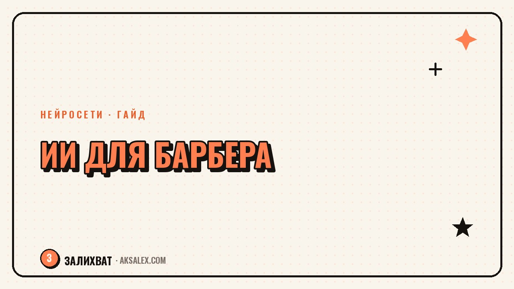

Нейросети для парикмахера и барбера: гайд мастеру

Мастер в салоне или барбершопе редко думает о нейросетях - руки заняты ножницами, а не чатом с ИИ. Но именно рутина отъедает время: переписка с клиентами, подбор причёски под форму лица, посты для соцсетей, которые надо делать между сменами. Нейросети для парикмахера и барбера закрывают ровно эти задачи - не заменяют руки мастера, а снимают часть административной и творческой нагрузки. Разберём, где ИИ реально экономит время, а где превращается в игрушку, на которую жалко тратить вечер.
Запись и переписка с клиентами
Самая частая головная боль мастера - это не стрижка, а телефон, который звонит во время работы. Клиент хочет записаться, перенести время, уточнить цену на окрашивание, а руки в этот момент заняты. Чат-бот на основе нейросети берёт на себя первый контакт: отвечает на типовые вопросы о расписании, ценах и свободных окнах, а сложные случаи передаёт мастеру.
Такие боты встраиваются прямо в WhatsApp, Telegram или Instagram - клиенту не нужно ставить отдельное приложение. Настройка занимает один вечер: загружаешь прайс, расписание и частые вопросы, а дальше бот сам ведёт диалог. Для барбершопа с постоянным потоком это особенно заметно - количество пропущенных сообщений падает в разы.
Что писать в сценарии бота
- Приветствие и список услуг с ценами
- Вопрос про удобное время и имя мастера
- Напоминание о записи за день до визита
- Вопрос об уходе после стрижки или окрашивания
- Фраза, когда переключить диалог на живого мастера
Подбор причёски и образа под клиента
Когда клиент приходит с размытым запросом «хочу что-то новое», спасает визуализация. Нейросети для генерации изображений умеют примерить разные варианты стрижки или цвета на фото лица клиента - это быстрее, чем листать журналы причёсок десятилетней давности. Мастер показывает три-четыре варианта на экране телефона, и клиент выбирает осознанно, а не на ощупь.
Это снимает частую проблему - разочарование после стрижки, когда ожидание и результат не совпали. Фото-референс, сгенерированный под конкретное лицо, форму головы и текстуру волос, честнее любого шаблонного каталога. Для сложного окрашивания можно отдельно сгенерировать превью тона, чтобы клиент увидел итог до начала работы.
Клиент не может объяснить словами, что хочет, но сразу узнаёт результат на картинке - вот для чего реально нужна визуализация в кресле.
Контент для соцсетей барбершопа и личного бренда мастера
Портфолио мастера сегодня живёт в Instagram и Телеграм-канале, и вести его приходится после смены, когда сил почти не остаётся. Нейросети ускоряют две вещи: обработку фото работ и подписи к постам. Фото «до и после» можно выровнять по свету и фону за минуту, а не тащить в студию с профессиональным освещением.
Текстовые нейросети помогают написать подпись к посту, когда в голове только «ну стрижка, красиво получилось». Даёшь в промпт детали - тип стрижки, что изменилось, сколько времени занял визит - и получаешь живой текст, который потом можно подправить под свой голос. Это не заменяет авторский стиль мастера, а убирает ступор перед пустым полем для текста.
Форматы, которые заходят в барбер-контенте
- Короткое видео процесса стрижки с ускорением
- Серия фото «до/после» с одинаковым ракурсом
- Разбор частых ошибок в уходе за бородой или волосами
- Ответы на вопросы подписчиков в Reels
- Обзор новых инструментов и косметики в работе
Сравнение сервисов для барбершопа
Выбор инструмента зависит от того, что болит сильнее - запись клиентов, визуализация причёсок или контент. Собрали рабочее сравнение по четырём направлениям, чтобы не тратить время на пробы всего подряд.
| Задача | Сервис | Что умеет | Для кого подходит |
|---|---|---|---|
| Запись клиентов | Чат-бот в Telegram/WhatsApp | Отвечает на вопросы, ведёт расписание | Барбершоп с потоком клиентов |
| Визуализация причёски | Генератор изображений по фото | Примеряет стрижку и цвет на лицо клиента | Мастер, который работает со сложными образами |
| Обработка фото работ | Фоторедактор с ИИ-функциями | Выравнивает свет, убирает фон, кадрирует | Личный блог мастера |
| Тексты для соцсетей | Текстовая нейросеть | Пишет подписи и идеи постов по промпту | Любой мастер, который ведёт страницу |
С чего начать мастеру, который никогда не пробовал ИИ
Не нужно подключать всё сразу - это верный способ забросить идею через неделю. Начни с одной задачи, которая болит сильнее всего прямо сейчас. Если теряешь клиентов из-за неответов - ставь чат-бота. Если портфолио выглядит слабо - начни с обработки фото.
Пошаговый план на первую неделю
- День 1-2: выбери одну задачу и один сервис под неё
- День 3: загрузи прайс, расписание или фото в выбранный инструмент
- День 4-5: протестируй на двух-трёх реальных клиентах
- День 6: собери обратную связь - что понравилось, что путает
- День 7: реши, оставлять инструмент или искать замену
Через неделю станет ясно, экономит ли инструмент время на деле или добавляет лишний шаг. Если экономит - подключай следующую задачу по тому же принципу, не торопясь.
Частые вопросы
Заменит ли нейросеть мастера парикмахера?
Нет, нейросеть не умеет стричь и красить волосы руками - это остаётся работой мастера. Она берёт на себя переписку, визуализацию и контент, освобождая время для самой стрижки и клиентов.
Нужно ли барбершопу разбираться в программировании для настройки бота?
Нет, современные чат-боты настраиваются через понятный конструктор без кода - достаточно загрузить прайс и расписание. Если совсем не хочется разбираться, настройку можно поручить администратору салона за один вечер.
Какая нейросеть лучше подходит для визуализации причёсок на фото клиента?
Подойдёт любой современный генератор изображений с функцией редактирования по фото - важно, чтобы он сохранял черты лица клиента при смене стрижки или цвета. Стоит протестировать на паре своих фото перед тем, как показывать клиентам.
Можно ли бесплатно пользоваться нейросетями для контента барбершопа?
Да, у большинства текстовых и графических нейросетей есть бесплатный тариф с ограниченным числом запросов в день, которого хватает для ведения одной страницы. Платная версия нужна, только если контент выпускается ежедневно и в больших объёмах.
Как убедить клиентов, что фото до и после не накручены нейросетью?
Снимай результат при одинаковом освещении и ракурсе, а ИИ используй только для лёгкой цветокоррекции, а не для подмены результата работы. Честность в портфолио ценится больше эффектных, но недостоверных кадров.
Раз тема оказалась полезной, вот что почитать следующим. Как начать всё сначала после неудачи - без самобичевания, с разбором опыта и реальным первым шагом.
Читать статью →а не вручную